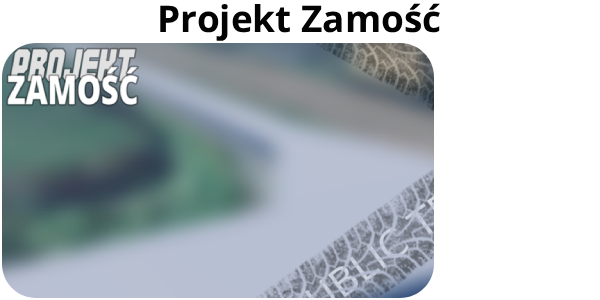
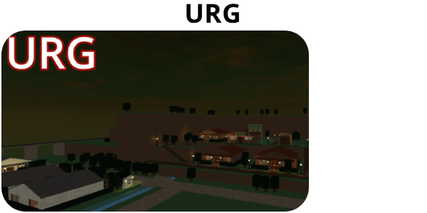
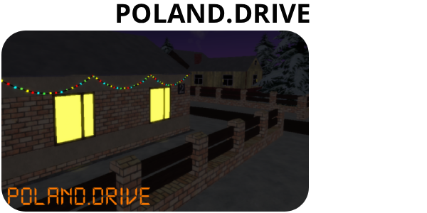
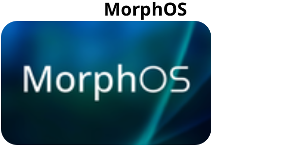
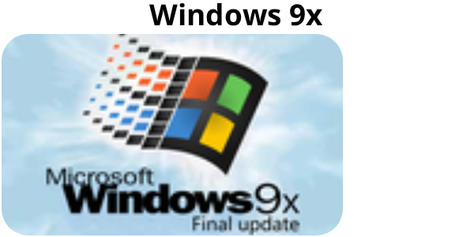
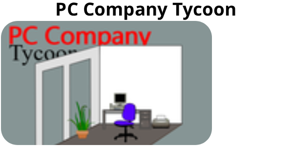

Moje Projekty
Poniżej widać hyperlinki prowadzące do innych stron:
Moje Graty Strona Główna Przydatne RzeczyPoniżej widać moje projekty:
Co to jest?
Gra na urządzenia z Androidem w której klikasz ikonę jabłka (lub innych owoców)
Inne informacje
Link do gryZostała ona stworzona w 3 dni a jej najnowsze wydanie to 1.1.3
Co to jest?
Próba odwzorowania terenów Zamościa (i okolicy) w Roblox
Inne informacje
Link do gryJedynie zostało odwzorowane jedno skrzyżowanie do mojej starej szkoły (gdyż projekt wystartował niedawno)
Co to jest?
Gra typu Roleplay (odgrywanie ról) w Roblox
Inne informacje
Link do gryGra ma sporo funkcji, w tym domy w których można mieszkać i miejsca pracy
Co to jest?
Gra typu Roleplay (odgrywanie ról) w Roblox, akcja dzieje się w Polsce
Inne informacje
Link do gryGra jest zapomniana i jest moim starszym projektem, została stworzona rok temu
Co to jest?
Symulacja systemu operacyjnego w Scratchu
Inne informacje
Link do gryDosyć nowoczesny projekt, najnowszy z systemów jaki stworzyłem na Scratchu
Co to jest?
Symulacja starego systemu operacyjnego (wzorowanego na Windows 95 i 98) w Scratchu
Inne informacje
Link do gryTen system operacyjny jest dosyć skomplikowany i został zrobiony tragicznie
Co to jest?
Symulator prowadzenia firmy komputerowej, akcja zaczyna się w 1980 roku i jest bardzo dopracowana
Inne informacje
Link do gryGra zawiera podstawową ekonomię i aktualnie pracuję nad 2 wersją
Poniżej widać hyperlinki prowadzące do innych stron:
Moje Graty Strona Główna Przydatne Rzeczy